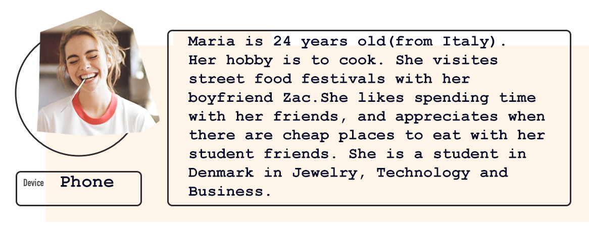

This app is made for all the Foodies out there, who are living in Copenhagen. But that does not mean that tourist are not welocme, the app is made it expact and turist friendly way.
I have made all information in English and the app has all the needed information, for people who are not very familliar with Copenhagen, to get around and find all the events!
A little bit about inspiration: main character is a 24 year old from Italy, her name is Maria and she comes from a family of cooks, her family owns a michelin star restaurant back in Italy and she grew up helping her parents in the kitchen. She has passion for food and she is alwasy on an adventure for finding new tastes and recipies.
